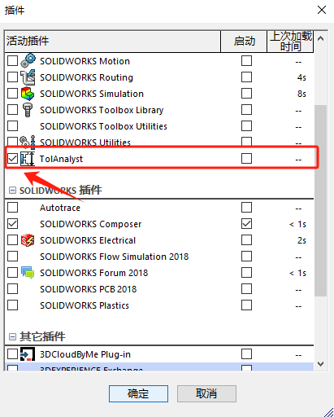
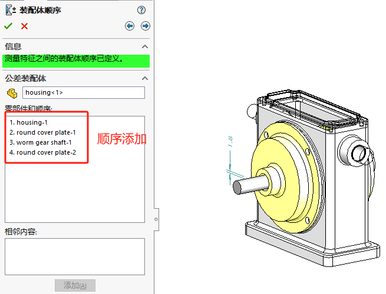
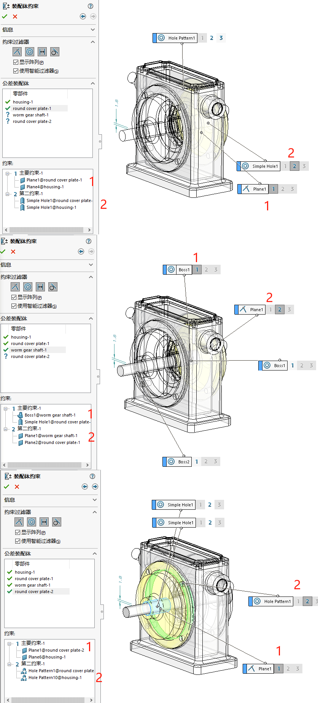
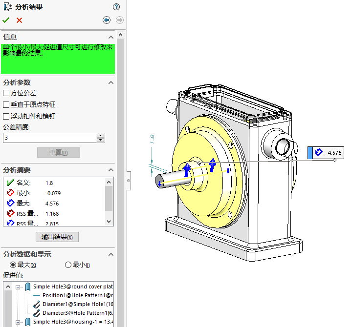

Tolanalyst
用于研究公差和装配体方法如何影响装配体两个特征之间的尺寸公差层叠。要激活使用 TolAnalyst 插件：需在【工具 > 插件】选择 TolAnalyst，单击确定。
此指导教程演示如何使用 TolAnalyst 对简单的装配体执行向上层叠分析。
1添加尺寸DimXpert
- 单击 TolAnalyst 算例。在两个特征之间生成测量，以确定最糟情形最小值/最大值关系。
2装配体顺序
为零部件生成一个装配体顺序。
3装配体约束
向每个零件应用约束。
4分析结果
评估结果。
